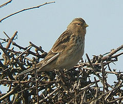
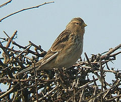

| Twite | |
|---|---|
|  | |
| Conservation status | |
| Binomial name | |
| Carduelis flavirostris (Linnaeus 1758) |
|
| Synonyms | |
|
| Twite | |
|---|---|
|  | |
| Conservation status | |
| Binomial name | |
| Carduelis flavirostris (Linnaeus 1758) |
|
| Synonyms | |
|
The Twite (Carduelis flavirostris) is a small passerine bird in the finch family Fringillidae.
The Twite is a small finch, similar in size and shape to a Linnet. Birds of the subspecies flavirostris are 13 to 13.5 centimetres (5.1 to 5.3 in) long, and those of the subspecies altaica are 13 to 13.5 centimetres (5.1 to 5.3 in) long. It lacks the red head patch and breast shown by the Linnet and the redpolls. It is brown streaked with black above, with a pink rump. The underparts buff to whitish, streaked with brown. The conical bill is yellow in winter and grey in summer. The call is a distinctive "twit", from which its and the song contains fast trills and twitters.[2]
This bird breeds in northern Europe and across central Asia. It is partially resident, but many birds migrate further south, or move to the coasts.[3]
Treeless moorland is favoured for breeding. It builds its nest in a bush, laying 4-7 eggs.
This species can form large flocks outside the breeding season, sometimes mixed with other finches on coasts and salt marshes. The food is seeds.

{kind=link}